ΔVREMulti-Horizon Volatility Range Engine
Know where price is statistically likely to travel — at every time horizon — before you place a trade. ΔVRE turns implied volatility into actionable band levels with automatic earnings ramp awareness and strategy suggestions.
What is ΔVRE?
ΔVRE — Volatility Range Engine — is a TradingView indicator that answers the single most important question in options trading: how far is this stock likely to move by a given date?
Using implied volatility (or historical vol as a fallback), ΔVRE computes a probabilistic price envelope — an upper and lower band — for four distinct time horizons simultaneously: end of week, end of month, end of quarter, and end of year. These bands represent a ~68% probability range (one standard deviation), meaning price is expected to remain inside them roughly two-thirds of the time.
Use EoM and EoQ band edges as logical strike targets for short puts, iron condors, and spreads — the math does the work.
Bands automatically widen as earnings approach through an 8-phase ramp system — no manual adjustments needed.
The dashboard reads vol regime, IVP, and band width to suggest the most appropriate strategy for current conditions.
Get alerted the moment price crosses a band — or comes back inside — so you never miss a critical management moment.
Before selling a strangle on NVDA, you need to know: "What is a 1-standard-deviation move by end of this month?" ΔVRE answers that instantly — and adjusts the answer as earnings approach, as volatility shifts, and as time decays. Your job shifts from calculating to deciding.
How It Works
The Four Horizons
ΔVRE calculates a separate expected range for each time horizon, using the calendar days remaining to the end of that period. Each horizon is independent — the EoQ band is not derived from the EoW band.
| Horizon | Label | Use Case | Typical DTE |
|---|---|---|---|
| EoW | End of Week | Weekly premium selling, straddles/strangles | 1–5 days |
| EoM | End of Month | Cash-secured puts, iron condors, monthly expiry | 1–31 days |
| EoQ | End of Quarter | Calendars, risk reversals, diagonal spreads | 1–90 days |
| EoY | End of Year | LEAPS, long-dated calls/puts, annual positioning | 1–365 days |
Anchored vs Rolling Mode
This is the most important setting decision you'll make:
Locks the calculation to the first day of the period. Price and volatility are captured at period open and held fixed. Bands don't move as price drifts — they show you the original expectation. Ideal for monitoring open positions against their entry context.
Recalculates every bar using live price and vol. Bands shift with market conditions — always showing the current best estimate of the remaining range. Ideal for fresh analysis and strike selection on any given day.
Anchored for managing existing positions — it keeps your original reference frame intact. Rolling for daily analysis and new trade setup — it always reflects today's market. Most experienced users keep it on Anchored and switch to Rolling briefly when analyzing new opportunities.
Vol Routing — How ΔVRE Sources Volatility
ΔVRE uses a two-track volatility sourcing system. It always tries Track 1 first and only falls back to Track 2 when no IV feed is available for the ticker:
| Track | Source | When Used |
|---|---|---|
| Track 1 | Live IV index (VIX, VXN, RVX, GVZ, OVX etc.) | Built-in for SPY/SPX/QQQ/NDX/IWM/RUT, or any ticker mapped via Custom Vol Routing |
| Track 2 | Historical Volatility (HV) | Fallback for every other ticker — calculated using whichever estimator is selected below |
Track 2's calculation method is chosen via the Vol Estimator setting (Garman-Klass, Close-to-Close, or EWMA) — these are three ways of computing the same fallback HV, not separate tracks. The VRP Buffer multiplier applies only to Track 2, since a live IV feed already embeds the market's own risk premium.
Straddle Proxy is not a volatility source. It's a setting under Calculation Method that scales the final expected-move result (from whichever track is active) down by a fixed factor to approximate ATM straddle pricing — it doesn't change where the volatility number itself comes from.
The Earnings Ramp — 8 Phases
When earnings are approaching, implied volatility historically expands in a predictable pattern. ΔVRE models this through an 8-phase forward-accumulating earnings ramp. As each phase activates, the bands widen automatically — reflecting the elevated vol environment rather than a static baseline.
Vertical dashed lines on the chart mark each phase transition. The ramp begins roughly 20 trading days before earnings and reaches peak expansion in the final pre-announcement phase. After earnings, the ramp resets and bands return to baseline.
If you're selling a strangle 15 days before NVDA earnings, the standard 1SD formula will underestimate the likely move. ΔVRE's ramp-adjusted bands give you a more realistic picture — and automatically suppress short-premium strategy signals near earnings where the risk/reward no longer favors selling.
IVP — Implied Volatility Percentile
The dashboard displays an IVP (IV Percentile) reading — where current IV sits relative to its own history. This is your vol regime barometer:
| IVP Range | Regime | Implication |
|---|---|---|
| Low | Cheap vol | Favor buying premium (LEAPS, long straddles, back ratios) |
| Neutral | Fair vol | Spreads, calendars, defined-risk structures |
| High | Expensive vol | Favor selling premium (short straddles, CSPs, iron condors) |
Risk Management Guardrails
ΔVRE tells you where price is statistically likely to be and whether current conditions favor a given strategy. It does not manage your position once you're in it. Most options trades are never held to expiration — they're closed early for a profit, cut early for a loss, or rolled into a new structure. This section provides the entry, stop-loss, profit-target, and roll/adjust conventions for each structure ΔVRE can surface, so you have a plan before you enter, not one improvised mid-trade.
The numbers below reflect widely-cited practice among options traders — they are not outputs of the ΔVRE model and the tool will never enforce them for you. Some structures have fairly standardized conventions with real published research behind them. Others are managed more by structural mechanics and thesis than by a single clean percentage — those are flagged explicitly. Your own risk tolerance, account size, and conviction should always override a generic guardrail. The roll/adjust decisions always require checking live ΔVRE signals at the decision point — never roll mechanically.
Defined-Risk Income — Credit Spreads & Iron Condors
| Guardrail | Convention | Why |
|---|---|---|
| Typical DTE | 4–6 weeks | Enough premium to make the trade worthwhile; short enough that theta decay works in your favor without excessive gamma risk near expiry |
| Entry credit target | ≥30% of spread width | Anything less skews risk/reward poorly — you're risking too much to make too little |
| Stop loss | 100% of credit received | Clean, simple trigger — if the trade has lost as much as you could have made, the original thesis has likely failed |
| Profit target | 50–70% of max profit | Capturing the first half of the profit curve carries far less tail risk than holding for the last 20–30% |
| Time-based exit | ~21 DTE if still open | Gamma risk accelerates sharply in the final 3 weeks — close or roll regardless of P/L at this point |
| Roll check at 21 DTE | Check ΔVRE before rolling | At 21 DTE: if IC still 🟢/🟡 + IVP still ≥40% + both bands intact → roll to next cycle. If IVP has dropped below 40%, front premium is too thin — close instead. If either band has breached, the range-bound thesis is broken — close, do not roll into a broken structure. |
| Never roll after breach | Band Integrity ❌ = close | Rolling a credit spread after a band breach extends risk into a regime that has already invalidated your strike selection. Take the loss and reassess when conditions reset. |
Cash-Secured Put (CSP)
| Guardrail | Convention | Why |
|---|---|---|
| Typical DTE | 3–6 weeks | Balances meaningful premium against a manageable assignment timeline |
| Strike selection | ~16–30 delta (≈ at or below xEoM lower band) | Statistically the put is unlikely to finish ITM; ΔVRE's lower band gives a precise model-derived reference |
| "Stop loss" | Often assignment itself, not a price stop | Many CSP sellers are happy to own the stock at the strike — assignment isn't a failure, it's a known outcome |
| Profit target | 50–75% of credit captured | Once most of the premium has decayed, the remaining reward rarely justifies the remaining tail risk |
| Roll down-and-out check | IVP ≥45% + lower band still below current price | Only roll down-and-out if IVP is still elevated enough to generate meaningful premium at the new strike, AND the xEoM lower band is still below current price — meaning the model still supports the put as OTM. If IVP has dropped below 40%, close rather than roll for thin premium. |
| If assigned | Evaluate as stock + covered call | After assignment, use the xEoM upper band as the covered call strike reference. Check IC/CSP signals on xEoM — if green, sell a covered call at or above the upper band to reduce your cost basis. |
Short Straddle / Strangle (Undefined Risk)
| Guardrail | Convention | Why |
|---|---|---|
| Typical DTE | 1–4 weeks | Shorter-dated to limit how long undefined risk stays open |
| When to enter | Only at IVP ≥60% + Band Integrity ✅ | Undefined risk demands rich premium AND intact bands — both conditions required |
| Stop loss | 1.5–2x credit received | Tighter than defined-risk — losses are theoretically unlimited, so the stop matters more here than anywhere else |
| Profit target | 25–50% of max profit | Take profit earlier; the back half of the curve isn't worth the open-ended risk |
| Roll check | IVP still ≥55% + both bands intact | Roll to next cycle only if IVP remains elevated and both bands are intact. If IVP has dropped or a band has breached, close entirely — a straddle/strangle in a breached or low-vol environment has no edge. |
| Never adjust strikes outward | Don't chase with wider strikes | Widening strikes after a move against you increases max loss and reduces premium — a compounding error. If the position is breached, take the defined loss. |
Calendar / Diagonal Spreads Looser Convention
Calendars are managed by structure and underlying behavior. The position's edge depends on the underlying staying within a range and on the vol term structure remaining favorable. See also: the META Calendar example in Section 08 for a worked arc with two front-leg roll decisions.
| Guardrail | Convention | Why |
|---|---|---|
| Typical DTE | Front xEoM ~21–30d · Back xEoQ ~84–105d | Front-month decays faster than back-month, creating the spread's time-decay differential |
| Entry condition | Cal/Diag 🟢/🟡 on both legs · IVP 35–60% | Both legs must show active signals; IVP must be in the sweet spot where front premium is worth selling but back leg isn't overpriced |
| Structural stop | xEoM Band Integrity ❌ Breached | If the underlying has moved through the band, the range-bound thesis has failed — close the spread |
| Back leg close | Close when back leg DTE <30d | Never hold long options to near-zero extrinsic value — close for residual value before the final decay |
| Front leg roll — conditions required | All 4 must be true to roll | (1) Cal/Diag still 🟢/🟡 on xEoM · (2) IVP still 35–60% · (3) xEoM Band Integrity ✅ Inside · (4) No ~ prefix on Cal/Diag (not inside T-20 earnings window). If any condition fails: close the spread instead of rolling. |
| IVP below 35% — close not roll | Front premium too thin | When IVP collapses below 35%, the front leg generates almost no premium — rolling extends risk without meaningful reward. Close the entire spread and wait for vol to recover before re-entering. |
| Never roll into earnings T-20 | ~ prefix = stop rolling | The ~ prefix on Cal/Diag means earnings proximity has modified the signal. Don't roll the front leg inside T-20 — wait for earnings to pass, then reassess whether to re-enter. |
Risk Reversal Looser Convention
The real exposure is the short leg — manage both legs somewhat independently. See also: the TSLA xEoY example in Section 09 where the ~ earnings modifier correctly flagged not to add at peak IVP, and the MU xEoQ example in Section 08 where a yellow signal preceded a +101% move.
| Guardrail | Convention | Why |
|---|---|---|
| Typical DTE | xEoQ (90d) or xEoY (270–360d) | Long enough for a directional thesis to develop; ΔVRE's band levels provide precise strikes at both horizons |
| Strike selection | Short put at xEoY/xEoQ lower band · Long call at upper band | Band edges are model-derived strikes — no guesswork on where to place legs |
| Short-leg stop | Short option value triples vs. credit collected | The short leg is the undefined-risk side — define a hard stop independent of how the long leg is performing |
| Profit-taking | Close ⅓ position at long leg +100% | Staged exit banks some gain on a big move while still participating if it continues |
| Never add near earnings | ~ prefix on RR = do not add | When the ~ modifier appears (earnings within T-20), the signal has been degraded by earnings proximity. Do not add to or roll the position — wait for earnings to pass. As seen in the TSLA arc, the ~ correctly flagged a high-IVP/pre-earnings moment where adding would have been poorly timed. |
| Annual roll decision (xEoY) | Roll when IVP cheap + signal green + 90–100d left | For xEoY Risk Reversals, begin evaluating a roll to the next year's bands when: IVP is below 40%, the RR or LEAPS signal is green, and ~90–100d remain on the current xEoY. This is the optimal window to close the current structure at fair value and re-enter at cheap vol on the new annual range. |
| Direction reversal — close short leg | Signal flips against your direction | If the RR signal flips to the opposite direction (e.g. was bullish RR, now shows bearish RR active), or the band has been breached by the underlying against your position, close the short leg immediately. The long leg can be held if it still has time value. |
Back Ratio Looser Convention
Back ratios have risk capped by construction — the real guardrail is math done before entry. See also: the META Back Ratio in Section 08 for a post-selloff setup with V-recovery outcome.
| Guardrail | Convention | Why |
|---|---|---|
| Typical DTE | 6–12 weeks (xEoQ) | Needs time for a large move to develop — this structure profits from magnitude, not steady drift |
| Pre-trade math | Calculate dead zone before entry | The zone between the short and long strikes at expiry is a known, calculable max loss — not a surprise if you map it first |
| Loss guardrail | Net debit paid (or dead-zone max) | This is your defined worst case — respect it as a hard ceiling |
| Profit-taking | 2–3x net debit | Holding for theoretical max usually requires an extreme move; 2–3x is a realistic, repeatable target |
| Roll check | Never roll if dead zone covers current price | Before any roll, recalculate the dead zone at current prices and strikes. If current price sits inside the dead zone, rolling extends your worst-case exposure — close instead and reconsider entry after price has moved clear of the zone. |
| Adjust on signal flip | Back Ratio signal flips red → reduce | If IVP spikes above 65% (making the long legs expensive), the Back Ratio loses its structural advantage. Close or reduce size — don't hold a back ratio into a high-IVP environment where your long legs are overpriced. |
LEAPS / Long-Dated Options
The full NVDA 2022 case study in Section 09 demonstrates exactly what happens when exit discipline isn't applied. The SPY Hedge in Section 09 shows the correct roll-to-lock-gains framework on an annual put hedge.
| Guardrail | Convention | Why |
|---|---|---|
| Typical DTE | 6–18 months (xEoQ or xEoY) | Enough time for a thesis to play out while minimizing daily theta decay |
| When to enter | IVP <40–50% · LEAPS 🟢/🟡 | You're buying premium — cheap implied vol means you're not overpaying for time |
| Stop loss | 25–50% of premium lost, OR sustained signal reversal | A hard % loss is simple; a sustained (multi-checkpoint) signal flip is a more thesis-aware trigger |
| Profit-taking | Scale out in tranches as price moves favorably | Locking in partial gains reduces the risk of round-tripping a large unrealized profit |
| Roll to lock gains (long call/put hedge) | Roll when IVP cheap + LEAPS green + 90–100d left | When a LEAPS position has moved significantly in your favor AND the market has recovered (for a put hedge) or pulled back (for a call): don't wait for expiry. When IVP is cheap and LEAPS turns green with ~90–100d remaining, close the current position and open a fresh one at the new band levels at cheap vol. This locks realized gains and resets protection. As seen in the SPY Hedge arc: Sep 19 (IVP 25%, LEAPS green, 93d) was the textbook roll point — waiting until December expiry would have left the gains on the table as the put decayed. |
| Never hold OTM LEAPS to expiry | Close when extrinsic <10% of original premium | An OTM LEAPS that has not moved in your favor loses value exponentially in its final months. If the position is significantly OTM with less than 60d remaining and the thesis has not developed, close for residual value rather than riding to zero. |
| Sustained signal reversal = exit | 2+ consecutive checkpoints showing signal flip | A single red checkpoint can be noise — vol spikes happen. But if LEAPS turns red at two consecutive check-ins AND the underlying has moved against the thesis AND IVP has risen, the market is telling you the thesis is wrong. Close and reassess rather than averaging down on a broken setup. |
Across every structure, the roll decision follows the same logic: check ΔVRE's live signals at the decision point, not the signals from when you entered. Conditions change — IVP moves, bands get breached, earnings proximity modifies signals. A roll that was valid at entry may not be valid 3 weeks later. The signal that matters is the one showing now, at the moment you're deciding whether to roll. When the signal says "don't enter this structure" at the roll point, it's also saying "don't roll into this structure."
Dashboard Tour
The ΔVRE dashboard sits directly on your TradingView chart. Click any row or cell below to learn what it shows:
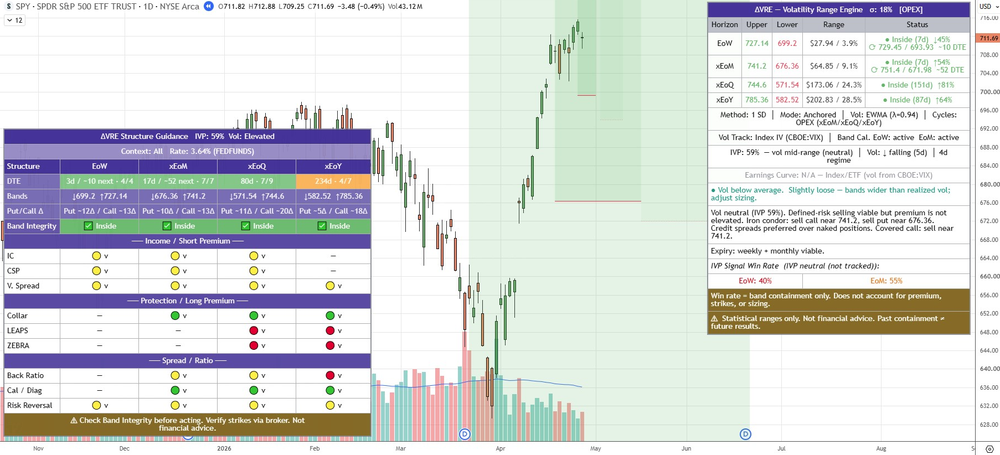
The interactive dashboard below mirrors the real layout. Click any row to reveal what that element means and how to use it:
| Metric | EoW | xEoM | xEoQ | xEoY |
|---|---|---|---|---|
| Upper Band | $727.14 | $741.20 | $744.60 | $785.36 |
| Lower Band | $699.20 | $676.36 | $571.54 | $582.52 |
| Range ($ / %) | $27.94 / 3.9% | $64.85 / 9.1% | $173.06 / 24.3% | $202.83 / 28.5% |
| Status | Inside (8d) ↑44% | Inside (8d) ↑54% | Inside (152d) ↑81% | Inside (88d) ↑64% |
| ── VOL & CALIBRATION ── | ||||
| IVP | 56% — Neutral (mid-range) · Vol falling · 5d regime | |||
| Method | 1 SD · Anchored · EWMA (λ=0.94) · Cycles: OPEX · Vol Track: Index IV (CBOE:VIX) | |||
| ── STRATEGY SIGNALS ── | ||||
| Iron Condor | ✓ EoW | ✓ xEoM | ✓ xEoQ | — |
| CSP | ✓ EoW | ✓ xEoM | ✓ xEoQ | — |
| V. Spread | ✓ EoW | ✓ xEoM | ✓ xEoQ | — |
| Earnings | N/A — Index/ETF (vol from CBOE:VIX) | |||
BACKTESTED · SPY · Apr 29, 2026 · Price $711.69 · IVP 59% (Neutral)
Settings Reference
ΔVRE organises its settings into five groups plus a dashboard and structure table reference below. Most users only need Groups 1–2 to get started. All defaults are recommended for the majority of use cases.
Straddle Proxy scales the 1 SD result down (default 0.85×) to approximate the ATM straddle breakeven price, useful when you're directly comparing ΔVRE bands to live straddle quotes. Most users: keep at 1 SD.
Rolling — recalculates every bar using live price, live vol, and a countdown DTE. Use this when analyzing a new opportunity to see what the bands would look like if you entered right now. Switch back to Anchored once you're in a trade.
OPEX cycles produce uniform ~28-day periods (vs variable calendar months), which means band widths are more consistent period-to-period. Historical bands and accuracy metrics are restated retroactively to match the OPEX boundaries.
Holiday note: if the 3rd Friday falls on a market holiday (e.g. Good Friday, Juneteenth), Thursday close is used as the OPEX close.
Most users trading standard monthly options should enable this.
Use cases: Next EoW — when buying/selling options expiring next Friday. Next EoM/xEoM — planning next month's positions while still in the current cycle. Next EoQ/EoY — LEAPS planning for the following quarter or year.
Projections are drawn as dotted, more-transparent lines to distinguish them from current bands. Treat as a planning range — levels shift daily until the next period anchors them.
Garman-Klass — uses OHLC data, roughly 5× more statistically efficient than close-to-close. Recommended for most tickers.
Close-to-Close — standard log-return HV using only closing prices. Simpler but noisier.
EWMA — Exponentially Weighted Moving Average, weights recent moves heavily. Best for volatile or trend-breaking instruments. Note: ΔVRE automatically routes to an IV feed (Track 1) when one is available — the Vol Estimator only applies when falling back to HV.
Set a non-zero value to override — useful for non-US instruments where the local risk-free rate differs materially from Fed Funds. Example: enter 4.50 for a 4.50% annualized rate.
TICKER:EXCHANGE:SYMBOL pairs, comma-separated. Example: GLD:CBOE:GVZ,OIL:CBOE:OVX routes GLD to the CBOE Gold Volatility Index and OIL to the CBOE Crude Oil Volatility Index. Leave blank unless you have a specific reason — incorrect entries will trigger a routing-failed warning in the dashboard.🟢 green → ~🟡 amber (proceed with caution)
🟡 amber → ~🔴 red (avoid)
The ~ prefix on any signal is your visual cue that earnings proximity has modified the signal from its raw vol-driven value.
Excluded structures (long premium — earnings vol helps, not hurts): Back Ratio, LEAPS, ZEBRA, Collar, Cal/Diag. T-1 and T-0 are excluded as vol is already fully priced by then.
All — every structure with full notes.
Long Stock — Collar, Vertical Spread (bear put), Risk Reversal.
Cash / Neutral — Iron Condor, CSP, Calendar/Diagonal.
Directional Bullish — LEAPS (calls), ZEBRA, Bull Vertical Spread, Risk Reversal.
Directional Bearish — LEAPS (puts), Bear Vertical Spread, Back Ratio, Collar.
v — signal driven by vol/IVP regime (normal signal logic)
b — signal modified by a band breach at that horizon
The ~ prefix indicates the signal has been further modified by earnings proximity.
Off by default — tooltips always show the full explanation regardless of this setting. Useful when learning to read the table; most users leave it off once familiar.
Main Dashboard Table — Row by Row
The main dashboard (top right by default) has a fixed set of rows. Here is what each one shows and how to read it.
Inside (Nd) ↑XX% — price is inside the band. N = days elapsed since the period started. ↑XX% = price position within the band (0% = at lower band, 100% = at upper band, 50% = midpoint). A reading of ↑75% means price is 3/4 of the way up toward the upper band.
Breached — price has closed beyond one of the band edges at some point this period. The breach is permanent for the period even if price has since returned inside. When a next-period projection is enabled, this cell also shows the projected next-period upper/lower and approximate DTE on a second line (prefixed ⟳).
Vol Track — which volatility source ΔVRE is currently using. Track 1 = a dedicated live IV index (e.g. VIX for SPY, VXN for QQQ), including any ticker mapped via Custom Vol Routing. Track 2 = calculated historical volatility (HV), using whichever Vol Estimator is selected — Garman-Klass, Close-to-Close, or EWMA. Track 1 is generally the more accurate read on market-implied vol; Track 2 is the fallback for tickers with no IV feed. A custom routing failure appears here as an orange warning.
Band Cal. — band calibration accuracy: the percentage of completed EoW and EoM periods where price stayed inside the bands throughout. 68% is the theoretical 1 SD threshold. ≥72% = overcalibrated (bands wider than needed — strong sell edge). 65–72% = well-calibrated. 58–65% = slightly loose (use wider strikes). 45–58% = poorly calibrated (use debit spreads, avoid selling premium). Below 45% = severely miscalibrated (realized vol far exceeds implied). "active" is shown in published mode; the numeric value is visible in developer mode.
IVP % — where current IV sits relative to its own history (typically 1 year). Above 60% = vol expensive, sell premium. Below 40% = vol cheap, buy premium. 40–60% = neutral, use caution or reduce size.
Tier description — plain-English interpretation: "vol expensive", "vol cheap", "vol mid-range (neutral)", etc.
Vol direction — whether vol is rising or falling over the last 5 days (↑ rising / ↓ falling). Rising vol when already high amplifies the sell signal; falling vol when already low reinforces the buy signal.
Regime — how many days the current vol regime has been in place. A 2-day regime means a very recent shift; a 30-day regime is established. Short regimes warrant extra caution.
A CONFLICT warning appears when IVP is above 60% but bands are loose (realized moves exceeding implied) — this suppresses the sell signal since the elevated IVP is not translating into reliable band containment.
Structure Guidance Table — Row by Row
The Structure Guidance table (enabled via Settings → Show Structure Guidance Table) is a separate panel that rates each options structure 🟢/🟡/🔴 per horizon based on current conditions. The header row shows the active DTE and Black-Scholes delta for each horizon. Here is what drives each signal.
Nd · cycle-date. For OPEX cycles, shows both the current DTE and a "next cycle ~Nd" projection. The orange highlight on a DTE cell means you are in a mid-period zone where entering new positions has reduced premium and margin for error. Hovering a DTE cell (or the EoW/xEoM/xEoQ/xEoY column header above it) also shows the exact calendar date range for the current period — and the next period's date range too, when a Next Period Projection is enabled for that horizon.Backtested Scenarios — Jump to a Lesson
Every example in this guide follows a backtested scenario using real historical price and ΔVRE signal data, from entry through expiry or roll. Use this index to jump directly to any example. New to the guide? Start at Section 01 and work through sequentially — the examples make most sense after reading the foundational sections.
Income Generation — EoW
The weekly expiry cycle is the most active arena for premium income. ΔVRE's EoW bands tell you exactly how wide the market is pricing the week's move — letting you choose between a straddle (at-the-money, max premium) and a strangle (wider, lower premium but more cushion).
Straddle when IVP is very high and you want maximum premium. Strangle when you want defined cushion — sell strikes at or just outside the EoW band edges. Iron Condor when you want defined risk on both sides.
Example A — SPY (Index, Calibrated IV) ✅ Clean Win
Open SPY on a daily chart with ΔVRE loaded. Look at the EoW row in the dashboard — this is your statistical range for the current week.
SPY's EoW band is typically 1.5–4% wide depending on the vol regime. At 3.9% today, an Iron Condor with strikes at the band edges gives meaningful cushion.
Check the IVP reading. This tells you whether IV is cheap, fair, or expensive — your primary entry gate for any premium-selling strategy.
At IVP 56%, premium is fair — not expensive enough to load up on naked straddles, but sufficient for an Iron Condor or credit spread. The falling vol direction is a mild tailwind: if vol continues dropping, your short premium position benefits.
With IVP at 56% (neutral), ΔVRE recommends the Iron Condor and credit spreads — not naked straddles. Here's the trade structure using today's real bands:
The ΔVRE narrative says: "Iron condor: sell call near 741.2, sell put near 676.36." The bands do the strike math — no separate calculation needed.
Before placing any trade, check band calibration. Today ΔVRE shows: EoW 63% · xEoM 58.3% — both in the viable range.
The xEoM looseness is a cue to size conservatively — the bands are slightly wider than actual moves have been. This is a real-world nuance ΔVRE flags automatically.
Set a ΔVRE breach alert so you're notified the moment SPY closes outside the EoW band.
| Row | Value |
|---|---|
| EoW Upper | $727.14 |
| EoW Lower | $699.20 |
| Range | $27.94 / 3.9% |
| Status | Inside (8d) ↑44% |
| IVP | 56% — Neutral |
| V. Spread | ✓ EoW |
| Iron Condor | ✓ EoW |
| Band Cal. | EoW 63% |
What Actually Happened — SPY Iron Condor, Apr 24–May 1, 2026
Backtested ScenarioThe setup above wasn't hypothetical — here's the same SPY position followed from entry through expiry, using ΔVRE's own dashboard at each checkpoint. This is what "responding mid-trade" actually looks like.
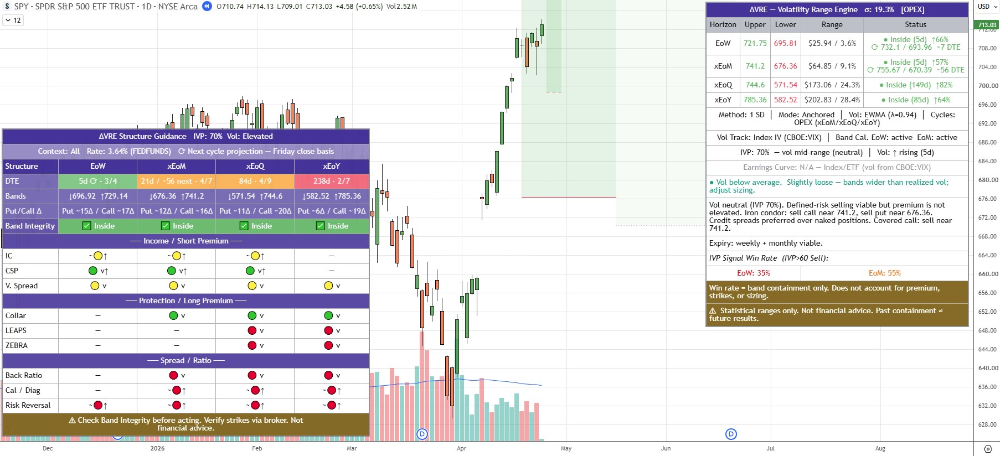
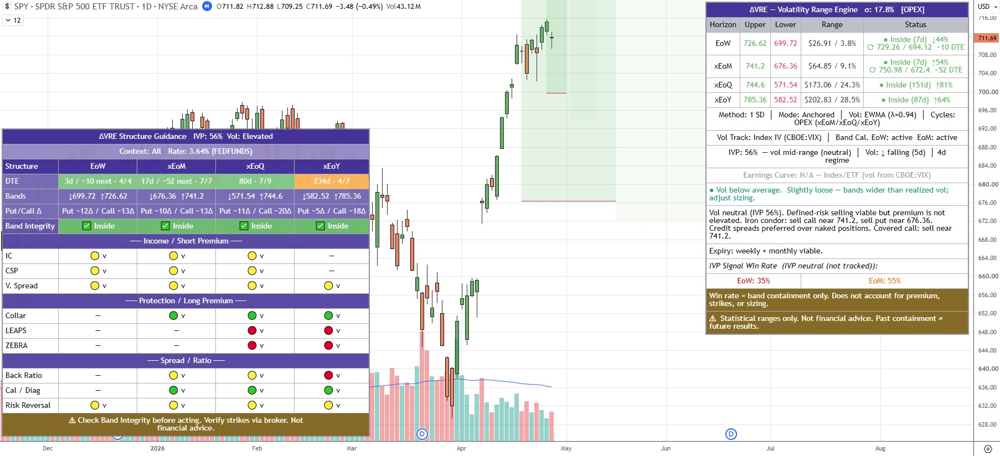
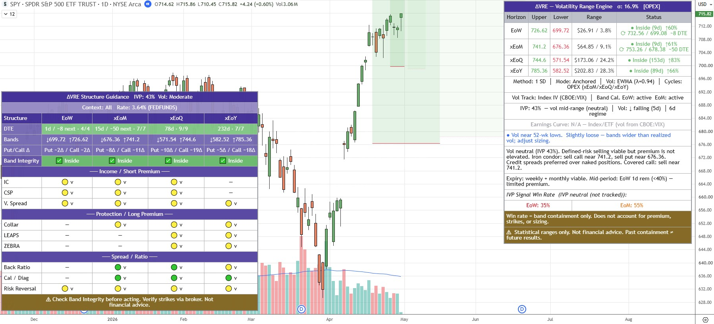
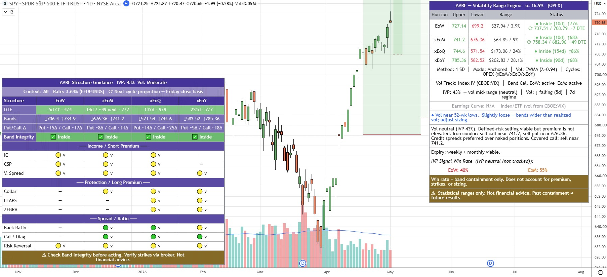
Example B — TSLA (High IV, Wide Moves) ⚠️ Breached & Recovered
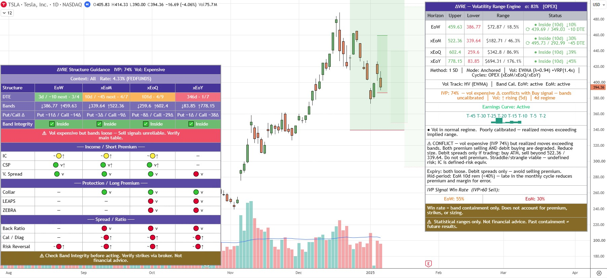
SPY's EoW band: $27.94 / 3.9%. TSLA's EoW band: $72.87 / 18.5% — nearly five times wider. This single comparison explains why the same Iron Condor structure requires completely different strike placement, sizing, and conviction level depending on the ticker. ΔVRE handles this automatically — it prices each ticker's own vol history, not a one-size-fits-all number.
Notice the red banner on the TSLA dashboard: "Vol expensive but bands loose — Sell signals unreliable. Verify main table." This fires when IVP is elevated (74% — suggesting selling premium) BUT band calibration is poor (EoW win rate 55%, EoM only 30% — TSLA has been making moves larger than the bands). The narrative confirms: "Realized moves exceed pricing. Avoid selling premium." Instead it suggests debit spreads: buy ATM, sell beyond $522.36 (call) or $339.64 (put). ΔVRE protects you from a signal that looks right on IVP alone but is statistically unsupported by actual price behavior.
The earnings curve shows Active with all 8 phase markers (T-45 through T-2) displayed. The ramp is in an early phase here — bands have started widening but haven't reached peak expansion yet. This is also why the xEoY band is an extraordinary $694.31 / 176.1% wide — TSLA's annual range includes multiple earnings events, each adding vol premium to the envelope.
Step-by-Step — TSLA EoW Trade Decision
Before anything else — look at how wide the EoW band is. TSLA's width tells you immediately that this is a completely different environment from SPY.
At 18.4% wide, the EoW band is telling you the market is pricing an enormous weekly range. This immediately rules out naked straddles or short strangles without checking calibration first.
IVP is 74% — elevated, which normally suggests selling premium. But ΔVRE has fired a red override banner. This is the critical moment.
The banner fires because TSLA has been making moves larger than the bands predict. IV looks high but realized moves are even higher. Selling premium here is statistically unsupported.
TSLA's earnings curve is active, with the full ramp phase ladder visible. This adds another layer of caution for short premium.
When the earnings ramp is active AND the override banner is firing, ΔVRE is giving you a double warning. Both the calibration and the event risk are pointing the same direction — away from selling.
ΔVRE's narrative redirects to debit spreads — buying ATM and selling at the band edges. This turns the wide bands into an advantage rather than a risk.
The xEoM bands ($339.64 / $522.36) become the short legs of your debit spreads — ΔVRE still gives you the strike anchors, just in a buying-premium context instead.
With loose bands and earnings ramp active, position sizing discipline is critical. Set your breach alerts and define your max loss before entry.
| Row | Value |
|---|---|
| EoW Upper | $459.62 |
| EoW Lower | $386.78 |
| Range | $72.83 / 18.4% |
| Status | Inside (11d) ↑11% |
| IVP | 64% — Elevated |
| Override | ⚠️ Bands Loose |
| Earnings | Active |
| Win Rate EoW | 55% |
| Win Rate EoM | 30% ⚠️ |
| Signal | Debit Spreads Only |
What Actually Happened — TSLA Debit Spread, Jan 3–10, 2025
Backtested Scenario · Breach EventUnlike the clean SPY week, this TSLA trade tests what happens when the override banner's warning actually comes true — price drifts steadily toward the lower band all week, then breaches before recovering by Friday close. Jan 9 was a market holiday, so this trade has 3 checkpoints instead of 4.
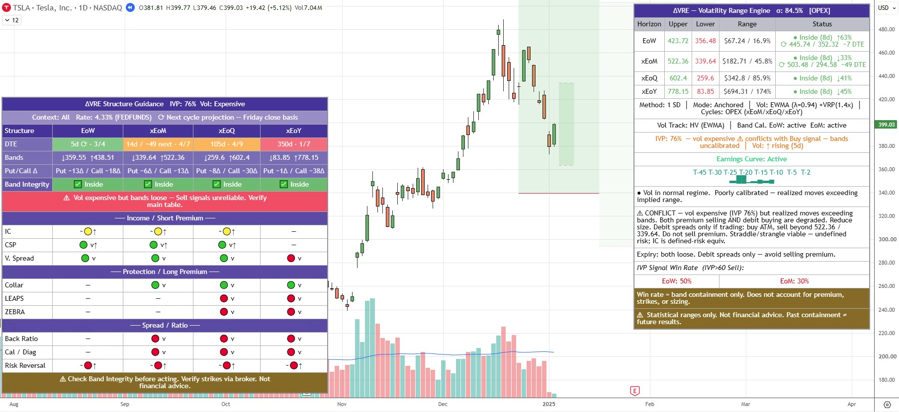

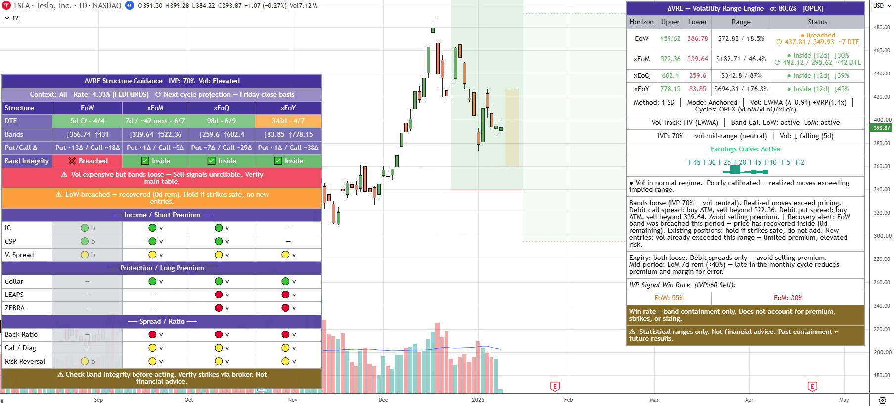
Cash-Secured Put — EoM
The cash-secured put (CSP) is one of the cleanest applications of ΔVRE. The EoM lower band becomes your natural strike anchor — it's the level below which price has only a ~16% statistical probability of closing by month end. Sell your put there, and you're selling statistically-priced insurance.
Example — NVDA (High IV, Momentum Name) 🔄 Signal Reversed Mid-Trade
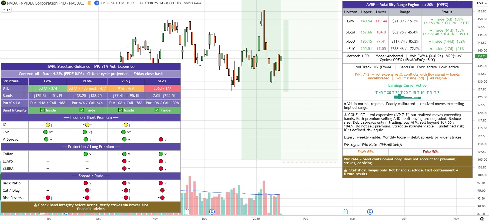
A CSP is a premium-selling strategy — you only want to sell when you're being paid well for the risk. IVP is your entry gate.
IVP 71% is firmly in the high tier — favorable to sell premium. But note the override banner is already active: realized moves have been exceeding the implied range. This doesn't block the trade, it's a sizing caution.
The xEoM lower band is your statistical anchor. Sell your put at or just below this level.
$104.90 is the level price has only ~16% probability of breaching by month end. NVDA closed the entry day at $138.25 — comfortably 24% above this strike.
NVDA reports quarterly. If earnings fall within your EoM expiry window, the CSP signal may be suppressed.
At entry, no earnings fall inside this specific 35-DTE window, so the CSP signal was live and green. Always re-check this — NVDA's earnings ramp can shift signal eligibility as the month progresses.
Check ΔVRE mid-month to assess your position. This exact trade is followed through to expiry below — including a real IVP regime flip.
| Row | Value |
|---|---|
| xEoM Upper | $167.66 |
| xEoM Lower | $104.90 |
| Range | $62.75 / 45.4% |
| Status | Inside ↑53% |
| IVP | 71% — Expensive |
| CSP Signal | ✓ EoM |
| Override | ⚠ Bands uncalibrated |
| Strike Guide | ~$105 |
What Actually Happened — NVDA CSP, Jan 17 – Feb 21, 2025
Backtested Scenario · Signal Reversed Mid-TradeThis is the most important lesson in the whole guide: a CSP entered when IVP was 71% (expensive, green light) watched its own supporting signal flip to red by week two — while price still never breached the strike. Six checkpoints, full month.
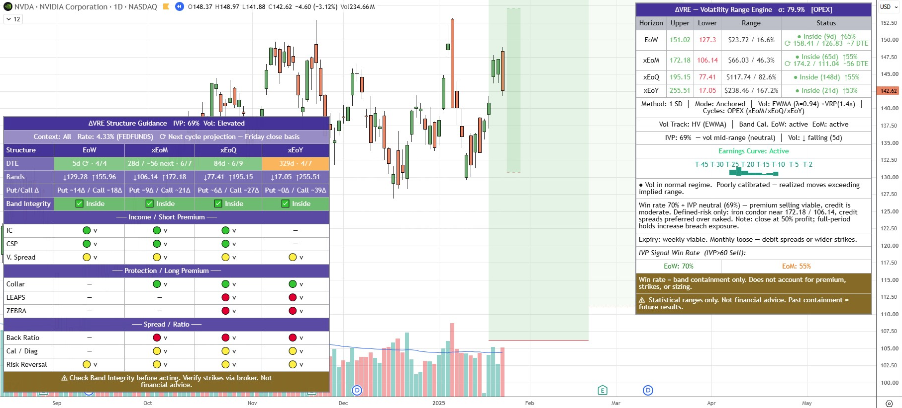
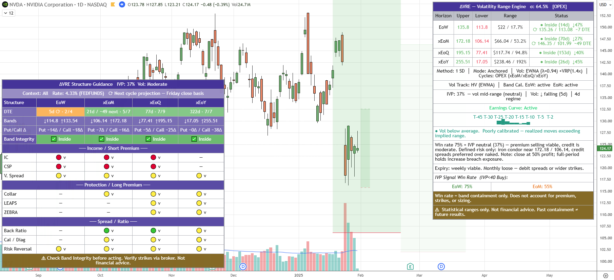
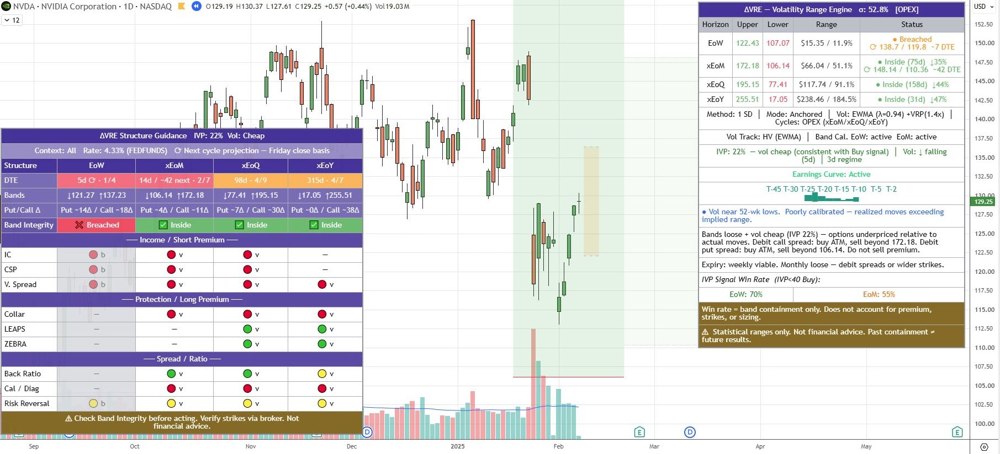
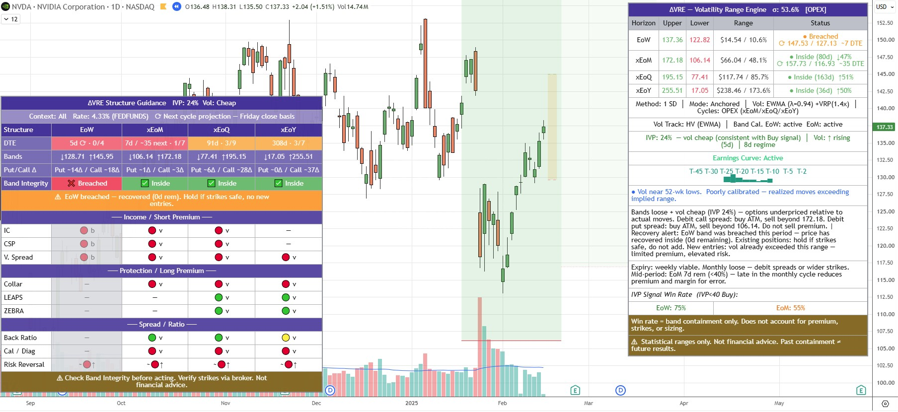
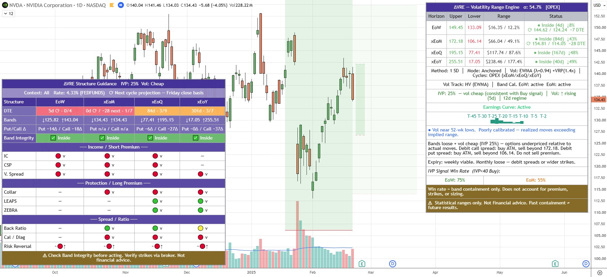
Bullish Bias — EoQ
The end-of-quarter horizon is ideal for directional structures — long enough for a thesis to develop, short enough to keep theta manageable. ΔVRE's EoQ bands give you the statistical range for the quarter, letting you anchor back ratios, risk reversals, and diagonal spreads to meaningful levels.
Example A — META (Back Ratio, xEoQ) — Post-Selloff Setup 📈 Structural Payoff
This example starts from a real, somewhat messier situation than a textbook setup: META had just dropped sharply, and by the time ΔVRE was checked, the EoW, xEoM, and xEoQ bands were all already breached — only the annual xEoY band remained intact. This is exactly the kind of moment where the strategy panel's job is to redirect you away from your first instinct.
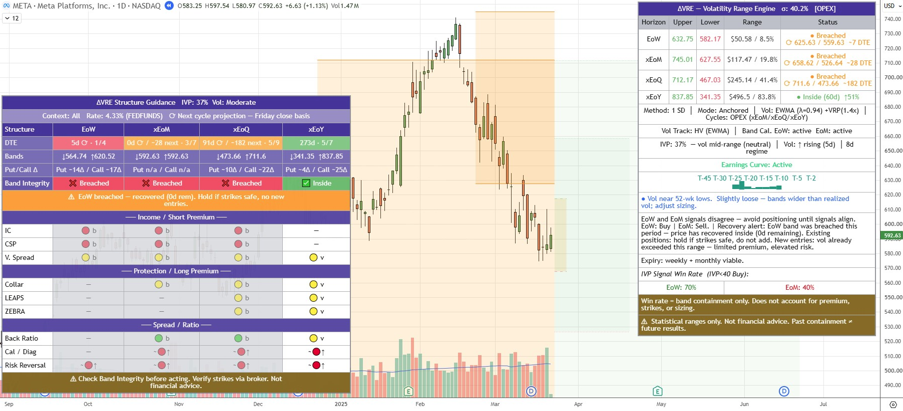
With EoW, xEoM, and xEoQ all showing Breached after META's drop, IC, CSP, and short-premium strategies are all marked red — selling premium here is the wrong instinct after a violent move. Instead, the strategy panel shows Back Ratio ✓ green on both xEoM and xEoQ. IVP is 37% (moderate), and the narrative explicitly flags: "EoW and EoM signals disagree — avoid positioning until signals align." This is ΔVRE steering you toward a structure built for exactly this kind of post-selloff uncertainty.
A call back ratio (sell 1 ATM/near-money call, buy 2 further OTM calls) is financed mostly by the short leg and profits from a sharp move higher — while capping risk if META keeps falling, since the structure is typically built for a small net debit or credit. ΔVRE anchors the long calls near the xEoQ upper band ($712.17) and the short call near the current breached zone. It's a structure that doesn't need IVP to be cheap or expensive — it needs the direction of the next move to be uncertain but expansion-prone, which is exactly the post-selloff condition shown here.
What Actually Happened — META Back Ratio, Mar 21 – Jun 13, 2025
Backtested Scenario · Sharp V-RecoveryThis is the back ratio's purpose realized in full: entered after a violent selloff, the position rode META through a further drop, then a powerful recovery that ultimately breached the xEoQ band on the upside — the exact kind of expansion this structure is built to capture.
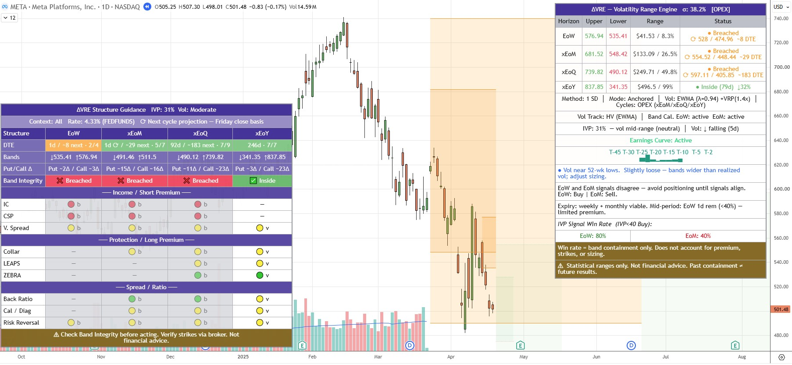
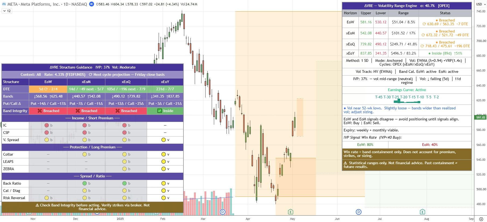
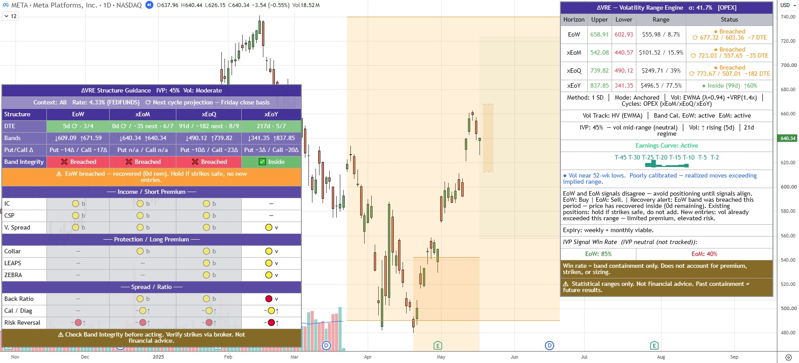
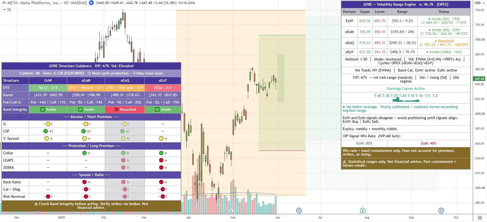
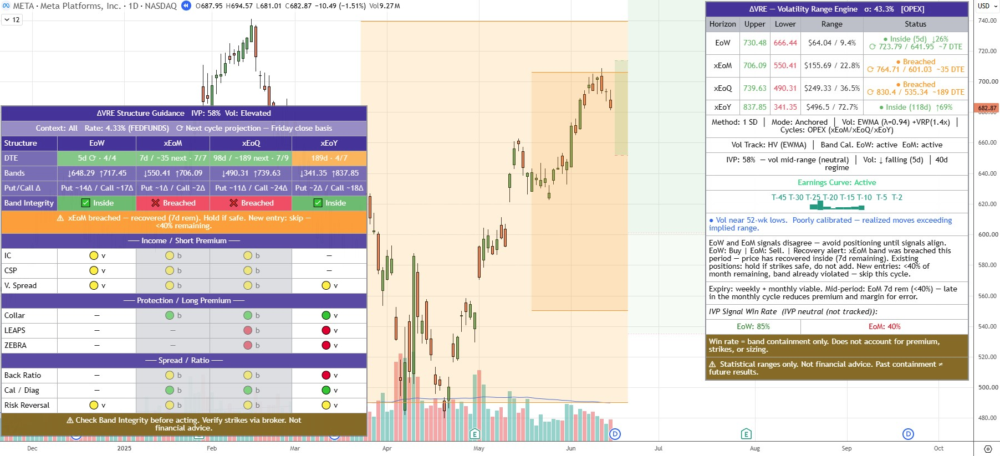
Example B — Reading Signal Strength: MU (Risk Reversal, xEoQ) 🟡 Conditional Signal
Not every signal in the strategy panel is a clean green checkmark. This example uses a real MU breakout day to teach the most overlooked skill in using ΔVRE: knowing what a yellow signal means, and why it's not the same as either a green go-ahead or a red no-go.
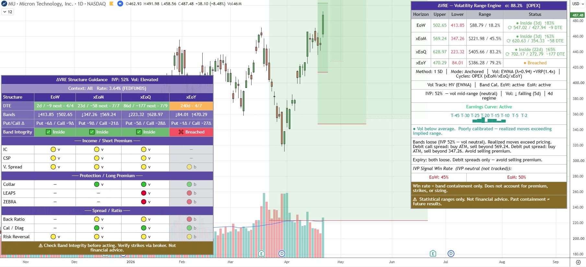
ΔVRE's strategy signals use a three-state system, not a binary on/off: green means the strategy's full condition set is met — IVP, calibration, and regime all align. Red means the strategy is actively contraindicated. Yellow sits in between — the strategy is structurally viable and worth considering, but one or more supporting conditions (often calibration or regime confidence) isn't fully confirmed. On MU here, Risk Reversal shows yellow across EoW, xEoM, and xEoQ — not a rejection, but a signal to size and confirm more carefully than you would on a green light.
MU gapped up +$38.10 (+8.48%) to $487.48 — a sharp, catalyst-driven move following a strong multi-week uptrend. IVP sits at a moderate 52%. The xEoY band is already Breached, and the narrative flags the same pattern seen in the TSLA and META examples: "Realized moves exceed pricing... avoid selling premium." A Risk Reversal here would sell the xEoQ lower put ($223.32) to help finance a long call near the xEoQ upper ($628.97) — but the yellow status means this should be sized as a moderate-conviction trade, not a maximum-conviction one.
Three practical responses to a yellow Risk Reversal: (1) Reduce size — trade a smaller position than you would on green, since the tool itself is signaling lower confidence. (2) Check the "why" — read the narrative panel; here it's calibration ("poorly calibrated — realized moves exceeding implied range"), which means the bands may be a less reliable strike guide than usual. (3) Re-check before committing — yellow signals can resolve to green or red as the next bar closes; if you're not under time pressure, waiting one more session for confirmation costs little.
What Actually Happened — MU Risk Reversal, Apr 22 – Jun 12, 2026
Backtested Scenario · Explosive Move (+101%)The yellow signal at entry reflected calibration uncertainty, not direction risk — and the conditional caution turned out to have nothing to do with what came next. MU more than doubled in seven weeks, breaching the xEoQ band massively on the upside.
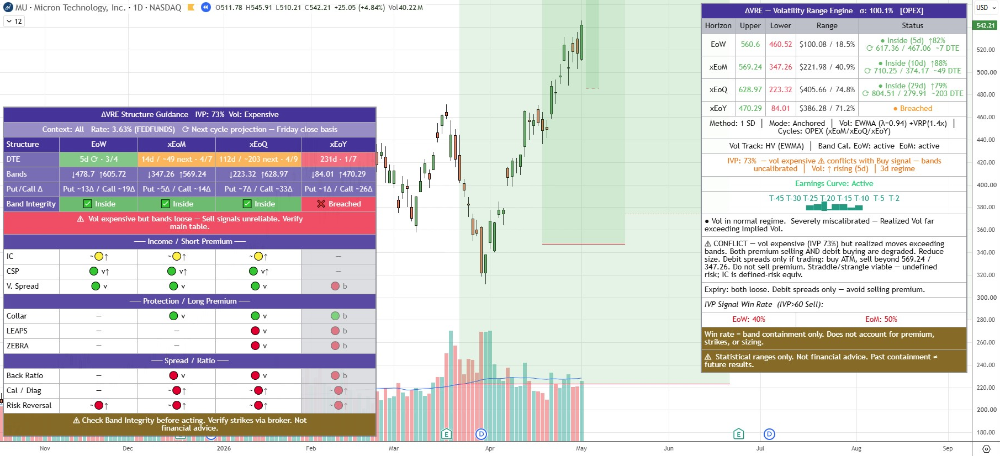
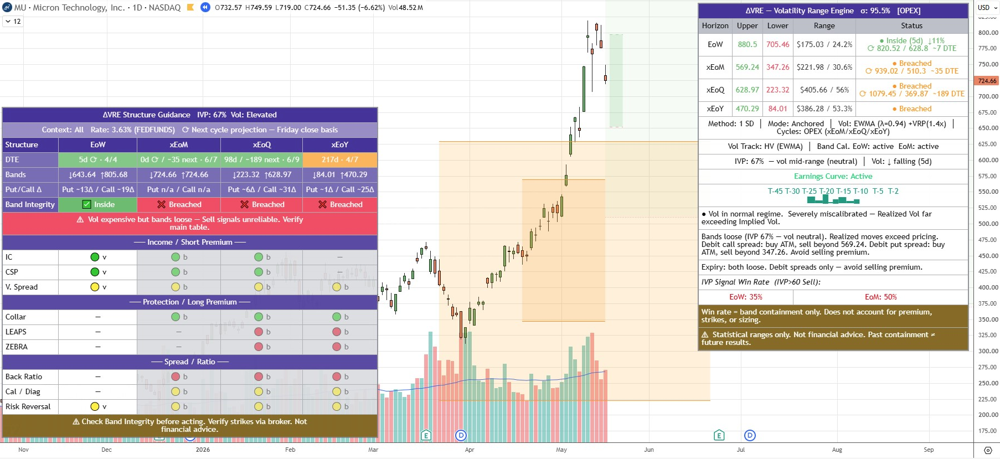
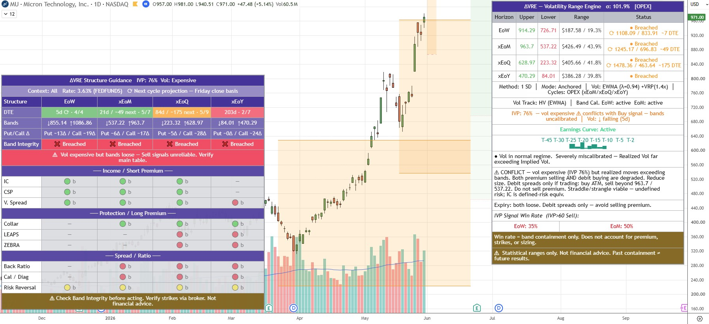
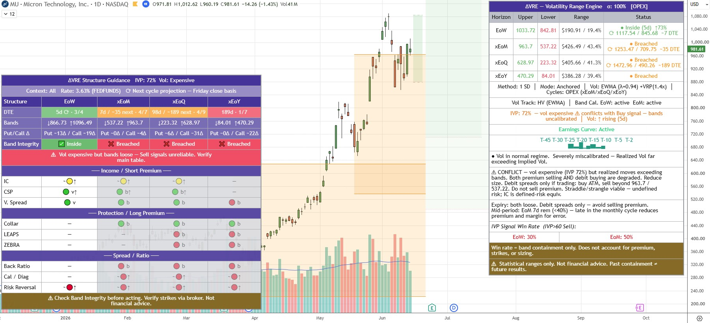
Example C — META (Calendar Spread, xEoM front / xEoQ back) ✅ Clean Win
A Calendar spread sells a near-dated option and buys a longer-dated option at the same strike, profiting from the difference in time decay rates. The front leg (xEoM, ~21–30 DTE) decays faster than the back leg (xEoQ, ~84–105 DTE) — you collect the front premium repeatedly while the back leg retains most of its value. The key operational insight: never roll the front leg mechanically. At each front-leg expiry, check ΔVRE's live signals before rolling — if Cal/Diag is still active, IVP is in range, and bands are intact, roll. If conditions have changed, close the spread instead. And always close the back leg before it goes to near-zero extrinsic value — don't hold long options to expiry.
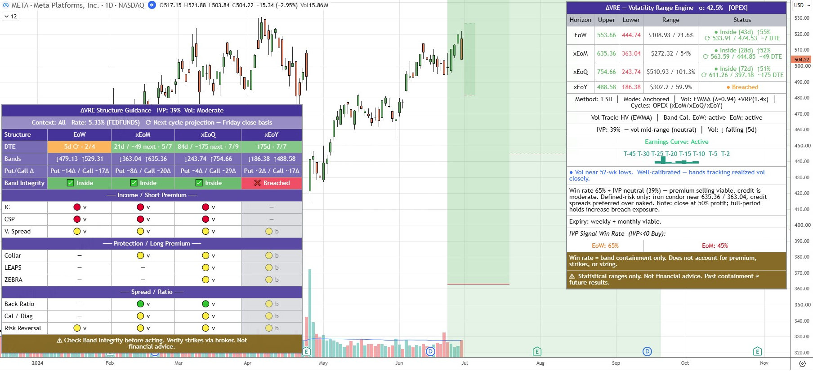
Three conditions converge on Jun 28: IVP 39% (mid-range — front premium worth selling, back leg not overpriced to buy), price perfectly centered (↑52% xEoM / ↑51% xEoQ — sitting almost exactly at the mid-band strike on both horizons), and META earnings ~33 days away (Jul 31) — close enough that front-month has some earnings premium baked in, making it richer to sell, but outside the T-20 window so the ~ modifier hasn't suppressed the Cal/Diag signal yet. Both horizons show well-calibrated vol tracking realized moves closely. This is what a clean calendar entry looks like on ΔVRE.
What Actually Happened — META Calendar Spread, Jun 28 – Sep 20, 2024
Backtested Scenario · xEoM Front / xEoQ Back · Signal-Conditional RollsFour checkpoints covering two full front-leg cycles. The front leg was sold at entry (Jun 28), expired at the Jul OPEX (Jul 19), and rolled conditionally based on live ΔVRE signals. META earnings passed through the arc without breaching either band. By September OPEX, IVP had collapsed to 5% — the signal not to roll again, but to close the back leg for residual value.
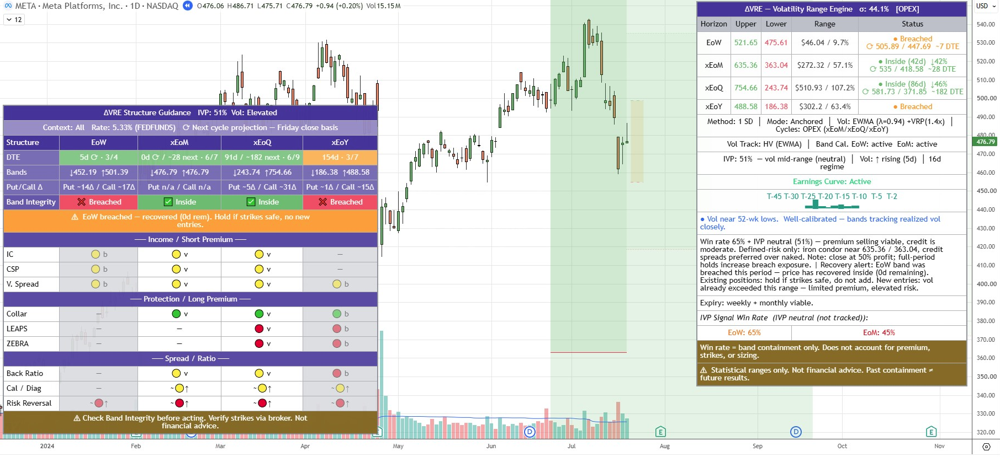
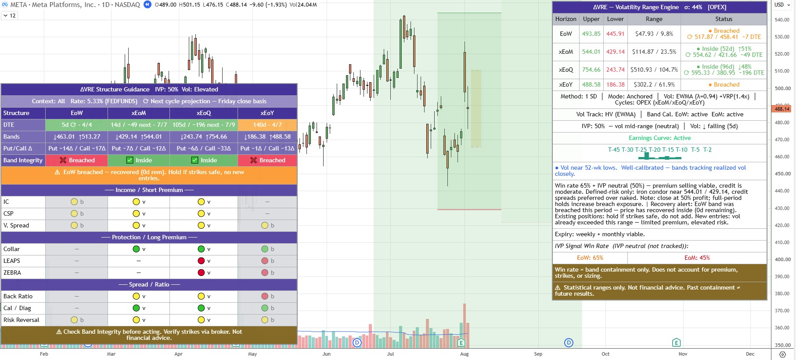
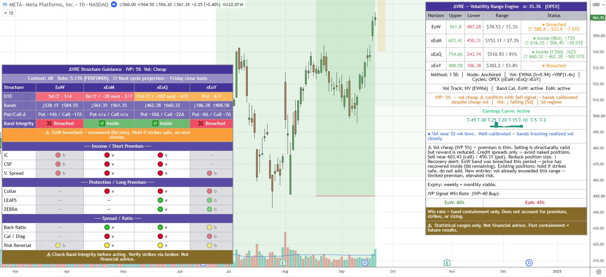
LEAPS / Long Options — EoY
The annual horizon is where ΔVRE shifts from a premium-selling tool to a long-options positioning tool. The EoY bands define the statistical range for the full year — giving you a framework for buying LEAPS calls, purchasing long-dated puts as portfolio hedges, and structuring risk reversals with a full-year perspective.
The best time to buy LEAPS is when IVP is low — IV is cheap and you're not overpaying for time. ΔVRE's IVP reading tells you exactly when this window opens. The EoY upper band then tells you the statistical upside target for your call's value.
Example A — NVDA (Bullish LEAPS, xEoY) 📉 Thesis Broke — Real Drawdown
Every other example in this guide shows a position that survived its test, recovered from a breach, or paid off on a big move. This one doesn't. NVDA's January 2022 LEAPS entry — cheap IV, green signal, textbook setup on paper — ran straight into one of the worst years in the stock's history. This is what it looks like when the thesis simply breaks, and what risk management would have needed to do about it.
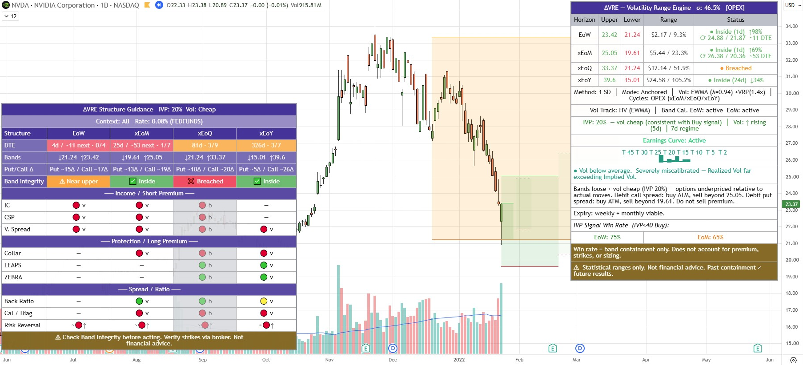
Jan 24, 2022 · Price $23.37 · IVP 20% (Cheap) · LEAPS ✓ Green on xEoQ and xEoY. This is exactly the setup the guide recommends: vol is cheap, the signal is green, and the narrative confirms "options underpriced relative to actual moves." Nothing about the entry itself was wrong. What nobody — including the tool — could know was that NVDA was about to enter one of its deepest drawdowns on record, driven by a broad 2022 selloff across high-growth tech as interest rates rose sharply.
What Actually Happened — NVDA LEAPS, Jan 24 – Dec 16, 2022
Backtested Scenario · Full-Year DrawdownNine checkpoints across the full calendar year. The LEAPS signal flips red within a month and stays red for ten straight months — a clear, sustained, unambiguous signal that something has changed. The question this arc forces is the one ΔVRE itself cannot answer: what should a disciplined trader have done about it?
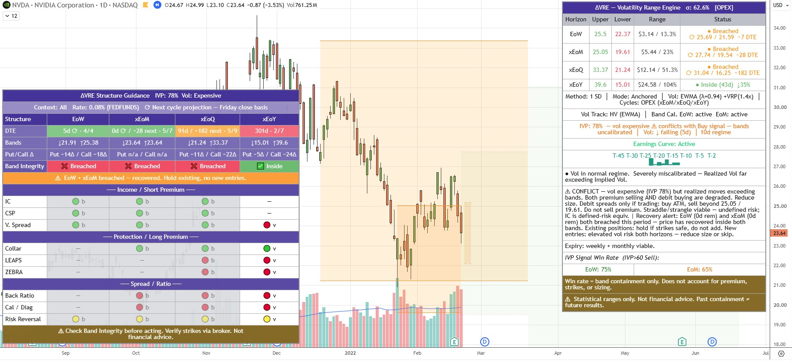
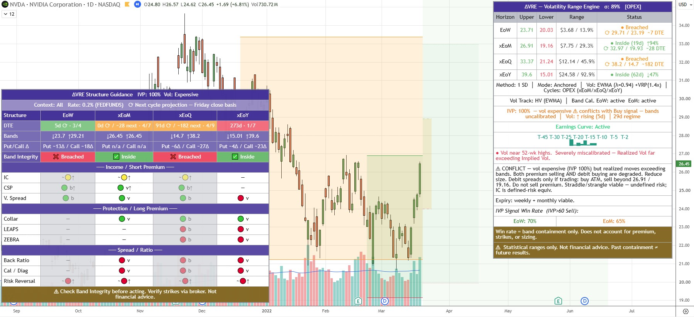
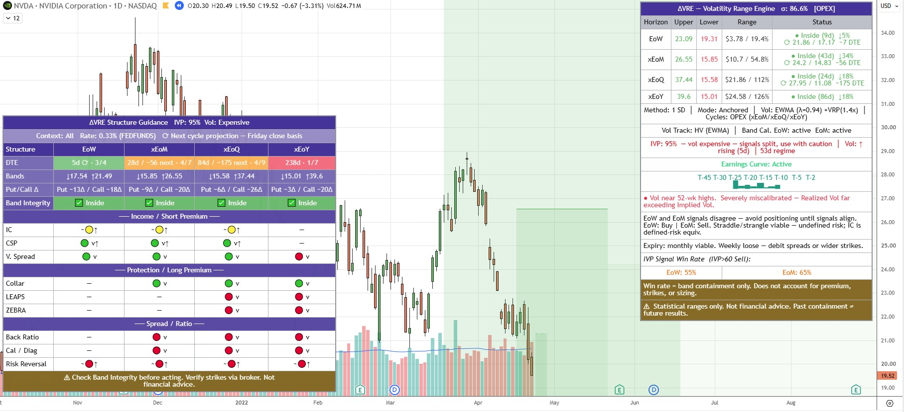
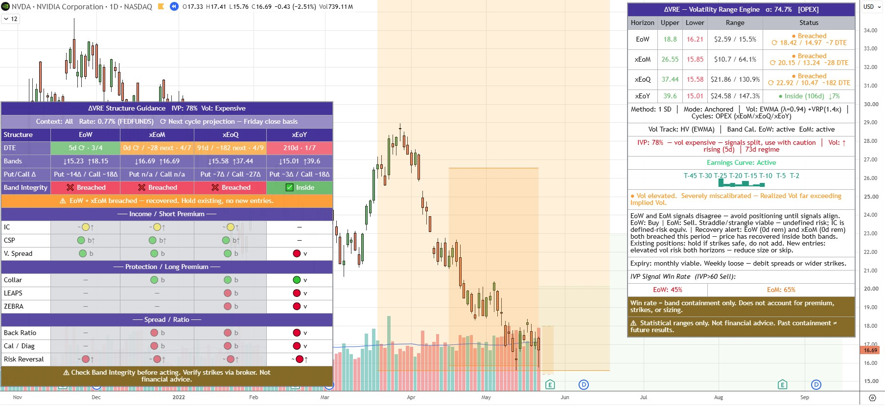
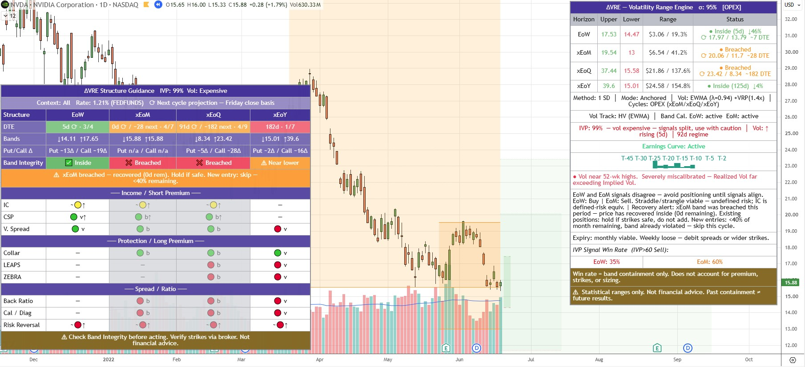
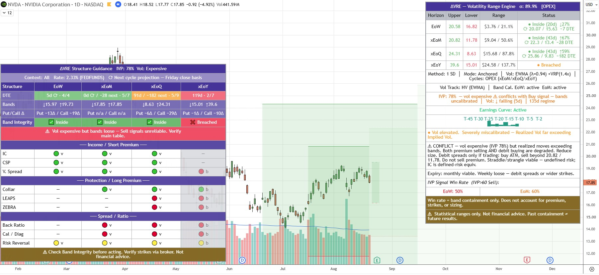
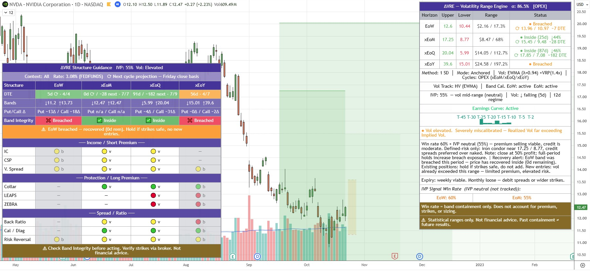
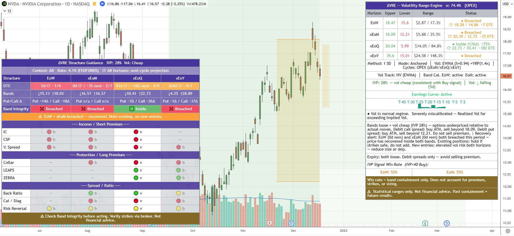
The LEAPS signal flipped red within one month of entry and stayed red for ten consecutive months — an unambiguous, sustained warning that the regime had changed. ΔVRE did exactly its job: it told you, clearly and repeatedly, that conditions no longer favored this trade. What it could not tell you — by design — is the practical question every LEAPS holder eventually faces: at what loss do you cut a position rather than hope for recovery?
See Section 3 — Risk Management Guardrails for the general LEAPS sizing, stop-loss, and profit-taking framework. Applied here: a simple rule like "close if down 25% and the signal has been red for 4+ weeks" would have triggered an exit around Check 4 (May 20) — locking in a bounded loss instead of riding the position to the −47% trough at Check 7. The xEoY band breach at Check 6 was also a hard reassessment checkpoint per that same framework, one most traders would have acted on well before the October low.
Example B — SPY (Bearish Hedge / Long Put, xEoY) 📈 Hedge Paid Off
A LEAPS put hedge is not a directional trade — it's annual portfolio insurance. The logic: when SPY has already consumed a significant portion of its xEoY upside early in the year, ΔVRE's protection signals activate, and IVP is in a reasonable range, buying a long put anchored to the xEoY lower band provides defined-cost downside coverage for the remainder of the year. The critical distinction from other LEAPS examples: you are not holding this to expiry regardless. If the market drops hard and stays down, you hold. If the market recovers fully, you roll early to lock in gains and reset protection cheaply — don't let a profitable put decay away unused.
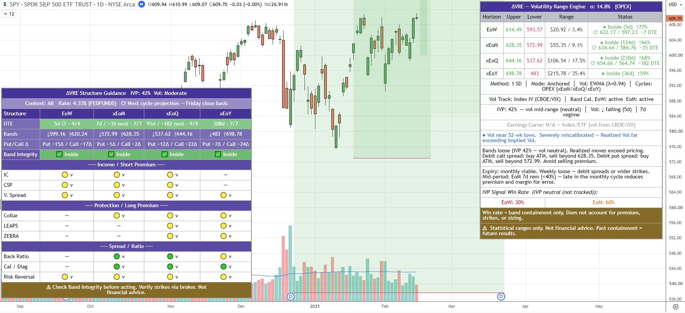
On Feb 14, ΔVRE shows LEAPS as yellow "v" on the xEoY column. The "v" suffix means vol-driven normal logic — the signal is being generated by standard volatility conditions, not a band breach event. Yellow means proceed with reduced conviction or smaller size, not "don't trade." All four Band Integrity cells show ✅ Inside — the xEoY lower band at $483 is a clean, trusted strike anchor. IVP at 47% is mid-range: puts cost real premium but are not prohibitively expensive for a 310-day hedge. SPY has consumed 59% of its annual upside in just 36 days — the setup rationale is clear.
What Actually Happened — SPY Long Put Hedge, Feb 14 – Dec 17, 2025
Backtested Scenario · Full-Year Hedge ArcSix checkpoints tracking the full hedge lifecycle. The position was stress-tested within weeks of entry when a tariff shock breached every band simultaneously and drove IVP to 99%. The put paid off during the April crisis, the market then fully recovered, and the key lesson emerged in September: when IVP collapses to 25% and LEAPS turns green, that is the signal to roll early and lock in gains — not wait for expiry while the put decays back to zero.
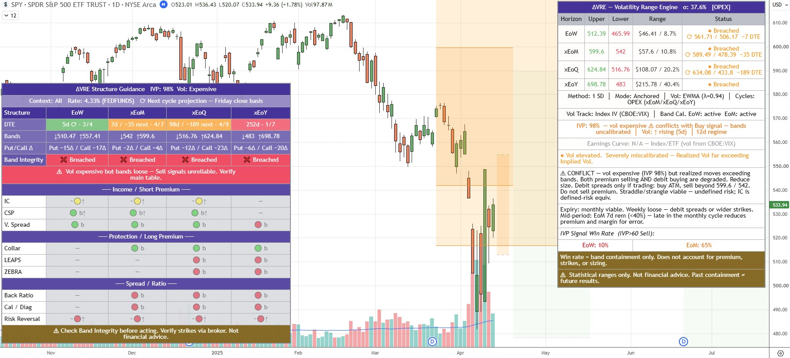
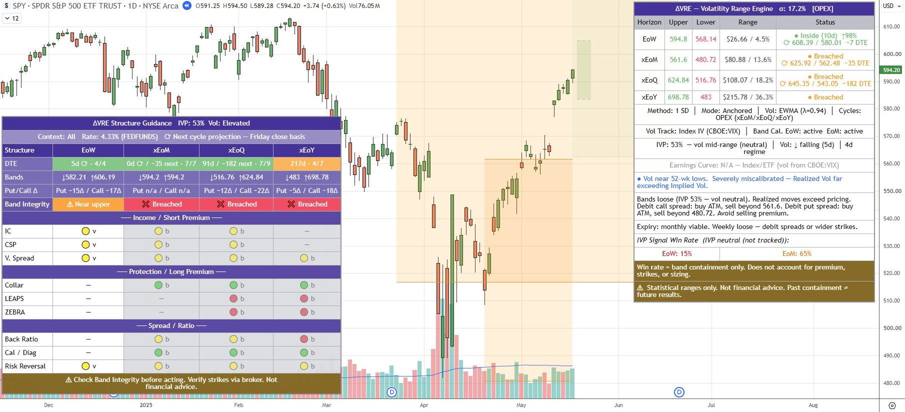
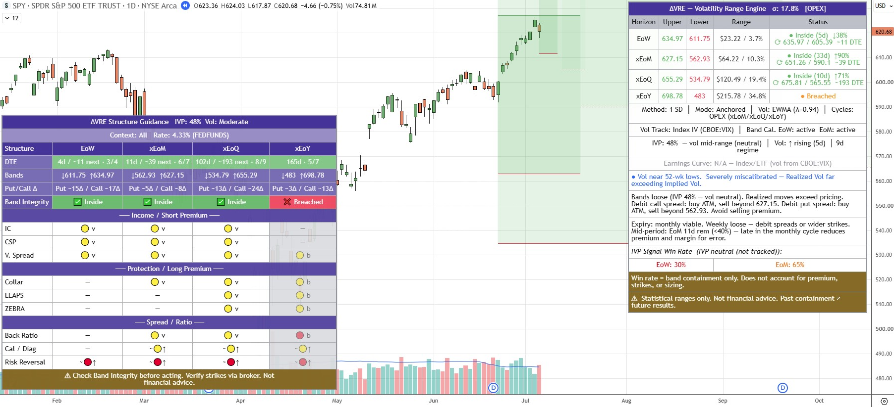
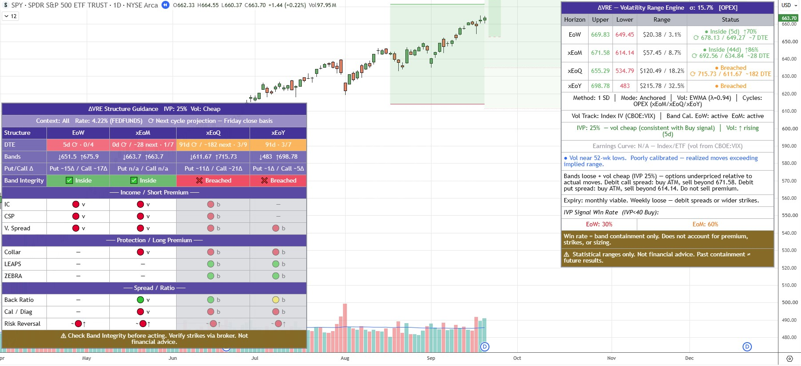
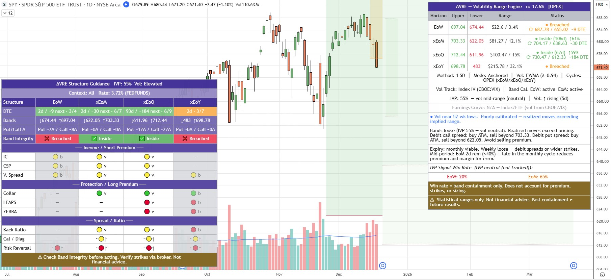
Example C — TSLA (Risk Reversal, xEoY) 📈 Structural Payoff
A Risk Reversal on the xEoY horizon is ΔVRE's most structurally elegant annual trade: sell the far-OTM put at the lower band, buy the call at the upper band, targeting near-zero net premium. You're not paying for your directional view — you're financing it with put premium at a strike so far away that the probability of assignment is near zero. TSLA is the natural home for this structure because its annual band is exceptionally wide (typically 80–115%), making both strikes simultaneously accessible with meaningful premium on the short put side. The full year gives the thesis time to develop without the noise of weekly or monthly volatility.
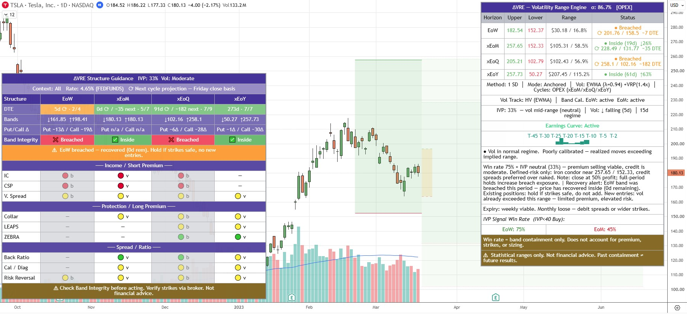
At entry, the xEoY band spans $50.27 to $257.73 — a $207 range on a $180 stock. The Put ~1Δ at the lower band means there is roughly a 1% probability of TSLA closing below $50 by year-end. That near-zero-delta put still has real premium due to TSLA's high implied volatility, which finances the call at $257.73 (~30Δ). This is the core logic: TSLA's vol is rich enough that you can sell what is essentially lottery-ticket insurance and use the proceeds to buy a meaningful call position — at zero net cost.
What Actually Happened — TSLA Risk Reversal xEoY, Mar 17 – Dec 15, 2023
Backtested Scenario · Full-Year RR ArcFour checkpoints across the 2023 xEoY cycle. The structure was entered at moderate IVP with a near-zero-cost net premium. By June, TSLA had rallied past the upper band and IVP exploded to 76% — the ~ earnings modifier appeared on the RR signal, correctly warning against adding near earnings. Vol then collapsed to a remarkable 2% IVP by September, and the position coasted into December expiry with the call deep in the money and the put expiring worthless.
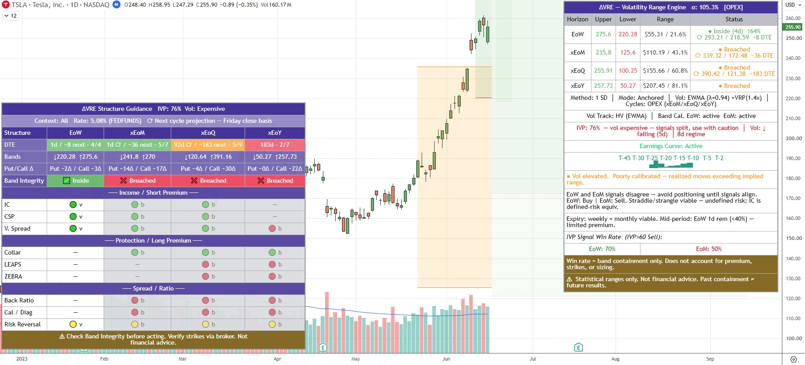
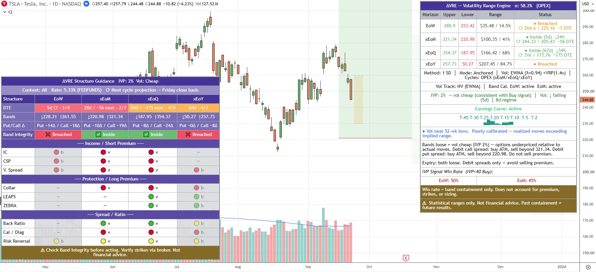
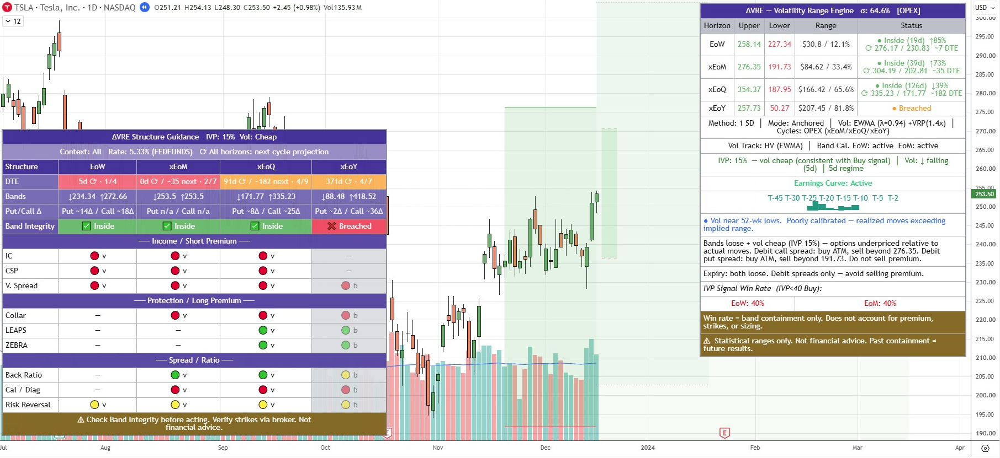
The Year Journey — NVDA xEoY 2024
This is a real position story, backtested against actual 2024 price action. A bullish LEAPS position on NVDA was initiated at the start of 2024 when ΔVRE flagged cheap vol, then tracked through two separate shock events, a post-split all-time high, and a choppy earnings aftermath before closing out the year. Click each node on the timeline to see exactly what the dashboard showed and what decision it supported.
Ticker: NVDA · Structure: LEAPS Call (xEoY) · Entry Price: $53.14 (Jan 9, 2024) · Outcome: $134.70 (Dec 20, 2024) — +153.5% · xEoY Bands: $19.16 – $79.64 (anchored) · Mode: Anchored throughout · Status: ❌ Breached upward in Q1 — the statistical model itself was exceeded, not broken. The thesis was right; the 1 SD band just wasn't wide enough for how right it was.
PEAK
RECOVERY
AFTERMATH
Price: $53.14 (+1.70%) · IVP: 27% (Cheap) · Vol: ↓ falling (5d) · 3d regime
IVP at 27% sits in cheap territory — a reasonable LEAPS entry window before the AI trade's biggest year yet. ΔVRE's LEAPS, ZEBRA, and Back Ratio signals are all active on the longer horizons. The xEoY bands are freshly anchored: Upper $79.64 · Lower $19.16 — a $60.47 / 113.8% annual range.
The Earnings Curve is Active with all phase markers visible. Note that EoW itself shows Breached here — a short weekly period that started before this entry and is unrelated to the fresh annual anchor being set today. The xEoY status is what matters for this position: Inside ↑56%.
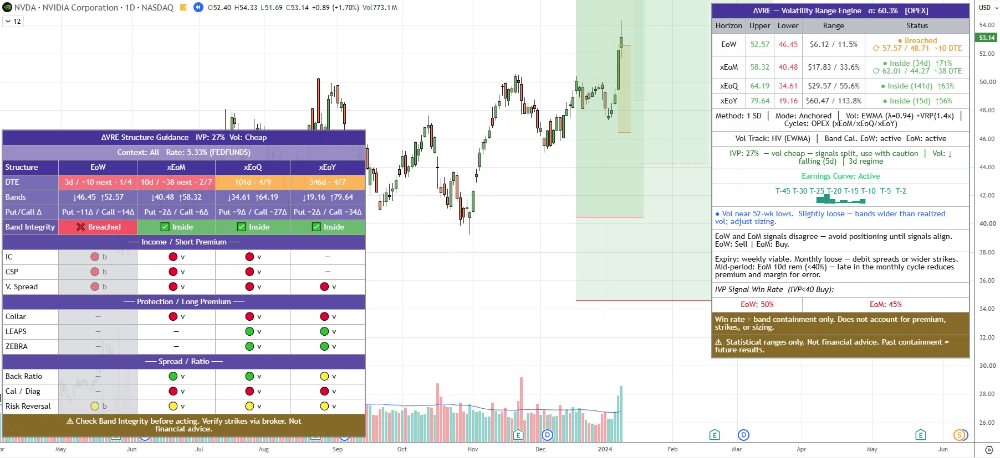
Price: $76.20 (−10.00%) · IVP: 14% (Cheap) · Vol: ↑ rising (5d)
A brutal single-day drop — NVDA's worst day of the year to that point, part of a broader semiconductor selloff. But look at the price relative to the entry anchor: $76.20 is still comfortably under the xEoY upper band of $79.64. The band shows Breached here only because price had already rallied well past $79.64 earlier in Q1, before this pullback — the sticky breach flag from that earlier move hasn't reset.
The genuinely surprising number: IVP is still just 14% — cheap — even after a 10% single-day drop. This is the IVP mechanic working exactly as designed: one violent day doesn't instantly reprice a 252-day realized-vol lookback. A trader reading only "IVP cheap" without checking the price chart could easily misread how dangerous this specific day actually was.
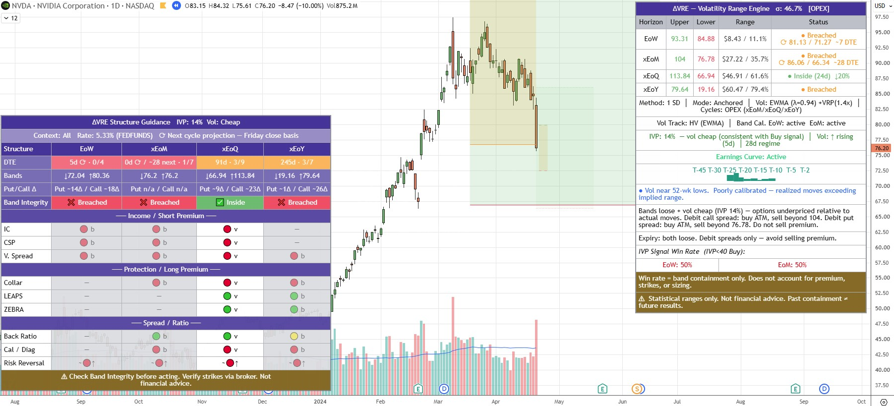
Price: $126.57 (−3.22%) · IVP: 85% (Expensive) · Vol ↑ rising · 124d regime
The day after NVIDIA's 10-for-1 split took effect, price sits at $126.57 — up 138% from the January entry, and far beyond the $79.64 xEoY upper band set at entry. EoW, xEoM, and xEoQ are all Breached; only the longer xEoY frame technically still governs the position, and it's Breached too.
IVP has flipped completely — from 14% cheap in April to 85% expensive here. The narrative correctly flags a conflict: "vol expensive but bands uncalibrated — realized moves exceeding implied." This isn't a bands failure; it's a reminder that a 1 SD annual band is a probabilistic envelope, not a ceiling. NVDA simply had a bigger year than a normal statistical distribution would predict.
Price: $104.75 (−0.21%) · IVP: 59% (Elevated) · Vol ↓ falling (5d) · 5d regime
This checkpoint lands four days after NVDA's August low near $90 — part of the global carry-trade-unwind selloff that hit the whole market in early August. The orange recovery banner reads: "xEoM breached — recovered (7d rem). Hold if safe. New entry: skip — <40% remaining." xEoQ has recovered to Inside; xEoY is still Breached (sticky, from June).
Price at $104.75 is still up 97% from the January entry, despite two separate double-digit-drawdown scares in the same year. This is the checkpoint that tests whether "hold through volatility" is actually followable in practice, not just in theory.
Price: $102.83 (−4.09%) · IVP: 90% (Expensive) · Vol ↑ rising · 15d regime
A week and a half after NVIDIA's Q2 FY25 earnings — a genuine beat on every headline number — the stock is still falling. IVP has spiked to 90%, among the highest readings of the whole year. This is the archetypal "great quarter, bad reaction" pattern: strong fundamentals don't override a market already nervous about capex sustainability and chip delivery timelines.
xEoM is Inside but deep in the band (↓7%), xEoQ Inside (↓29%), xEoY still Breached from June. The position is choppy but the annual thesis — was NVDA going to be meaningfully higher than $19.16–$79.64 a year after entry — was never actually in question at this price.
Price: $134.70 (+3.08%) · IVP: 91% (Expensive) · EoW/xEoM/xEoQ Inside · xEoY still Breached
Twelve months, a 10% single-day crash, a post-split all-time high, a second global-selloff scare, and a beat-but-sold-off earnings reaction later: NVDA closes the checkpoint at $134.70 — +153.5% from the $53.14 entry. The shorter horizons (EoW, xEoM, xEoQ) have all normalized back to Inside. Only xEoY still carries the Breached flag — permanently, for this cycle — because price exceeded the annual 1 SD envelope back in Q1 and the flag never resets mid-period.
That's the year's central lesson: a breached band is not a broken thesis. The statistical model was "wrong" in the best possible direction. A trader who exited at either shock — April's -10% day or August's carry-trade panic — would have left the single biggest gains of the year on the table.